Eclipse CDT-Debug
in Luna, Mars and Beyond
Alvaro Sanchez-Leon (Ericsson)
Marc-André Laperle (Ericsson)
Marc Dumais (Ericsson)
Agenda
- What is the CDT?
- CDT Debug - Feature highlights
- Debugging Parallella with CDT
- Debugging with CDT - a use case Demo
- Q&A
What is the CDT?
- C/C++ Development Tooling (CDT)
- Tools for building applications in C/C++ using Eclipse
- Platform used to create C/C++ IDEs
- The Eclipse C/C++ IDE Package
- A community of passionate tools developers
CDT Debug - Feature highlights
Reverse Debugging
- Step or Resume forwards AND backwards
- Go back in time, change data and re-write history
- Use breakpoints to enable/disable recording
Multi-Process Debugging
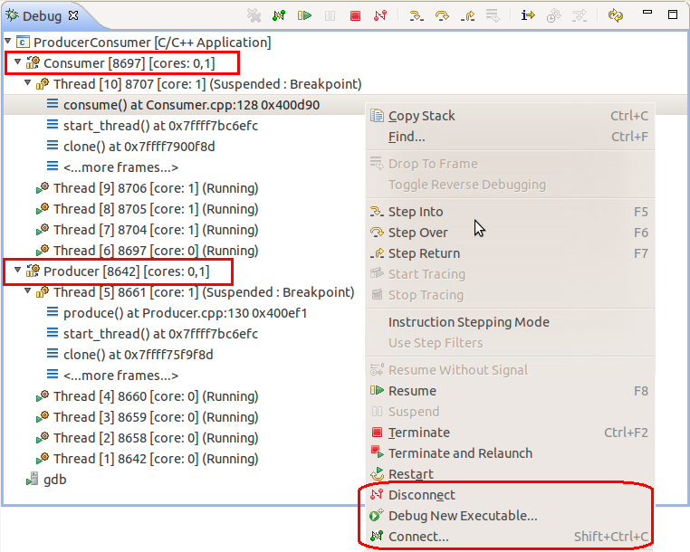
Return Values
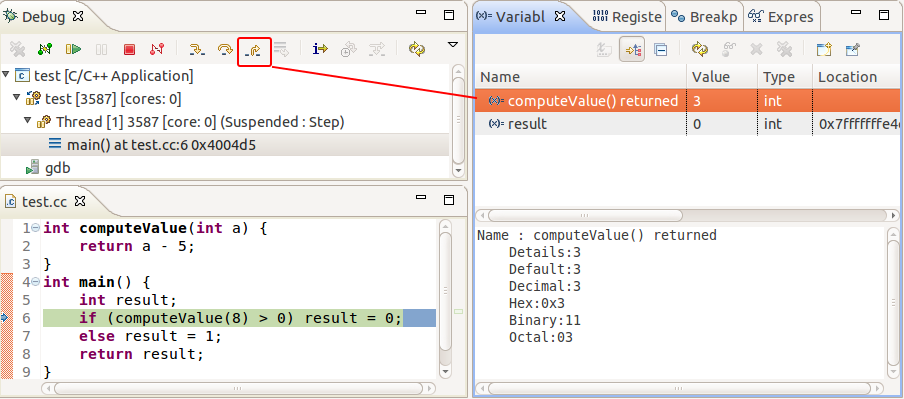
- After a Step-Return
- Top element of Variables view
- Removed at next execution
- Plan to generalize for Step-Over
Step Into Selection
void compute(int a, float b) {
subtract(multiply(add(a, b), 3));
}
How many operations to step into subtract()?
Step-into:
int add(int arg1, int arg2) {
return arg1 + arg2;
}
Return and Step-into again:
int multiply(int arg1, int arg2) {
return arg1 * arg2;
}
Return and Step-into yet again to finally get to:
int subtract(int arg1, int arg2) {
return arg1 - arg2;
}
Five stepping operations!
Step Into Selection
void compute(int a, float b) {
subtract(multiply(add(a, b), 3));
}
Select the "subtract" method call in the Editor
Choose the Step-Into-Selection operation:
int subtract(int arg1, int arg2) {
return arg1 - arg2;
}
All other method calls are stepped-over automatically
Just one stepping operation!
Dynamic-Printf
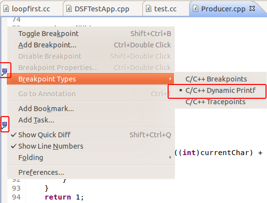
- No re-compiling
- No re-deploying
- Debugger can disconnect
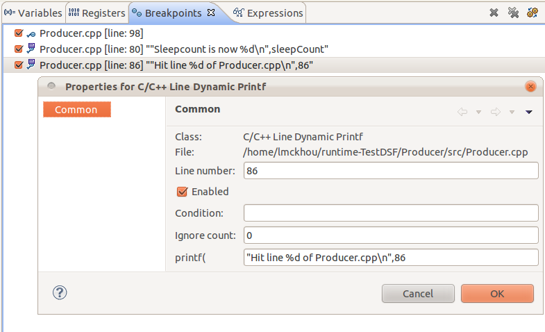
In the works
- Register Grouping
- Debugging Parallela with CDT
- New Launch UI
- Global Breakpoints
Features of current interest
- Multi Level Hierarchy in the Debug View
- Grouping of Debug view elements
- Hiding of debug view elements
- User-selectable Debug view layouts
- Synchronized Run Control Operations
- Per-target Breakpoints
Debugging Parallella with CDT
An Epiphany Introduction
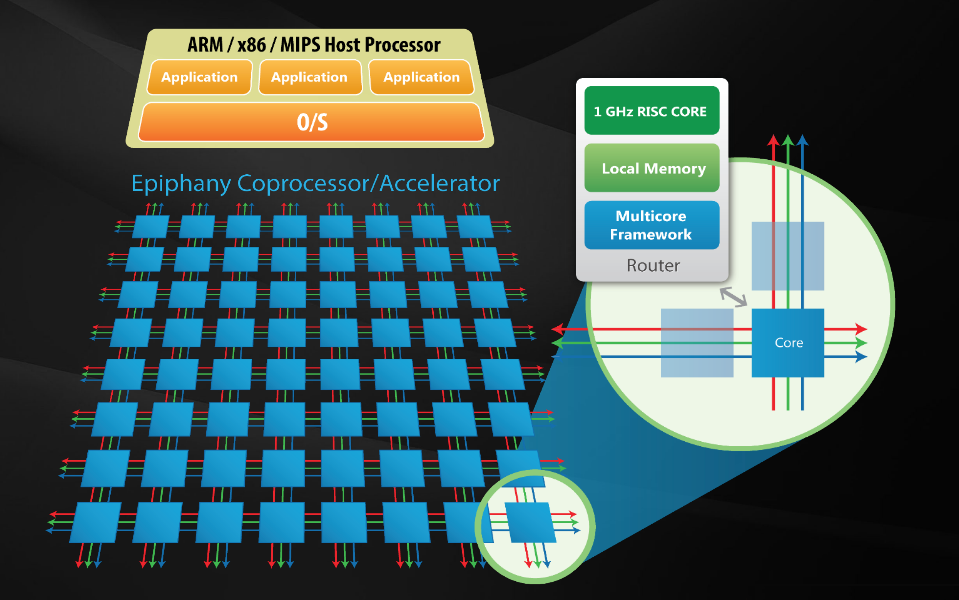
Massive Parallelism Has Arrived!
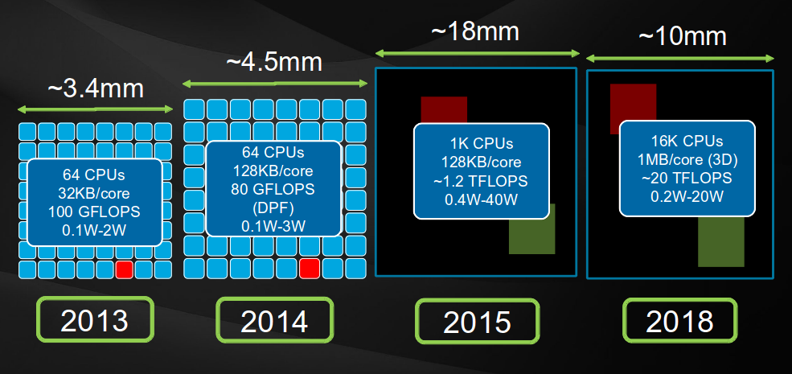
- How in the ^**&#@ are we doing to program AND DEBUG this??
The Parallella Computer
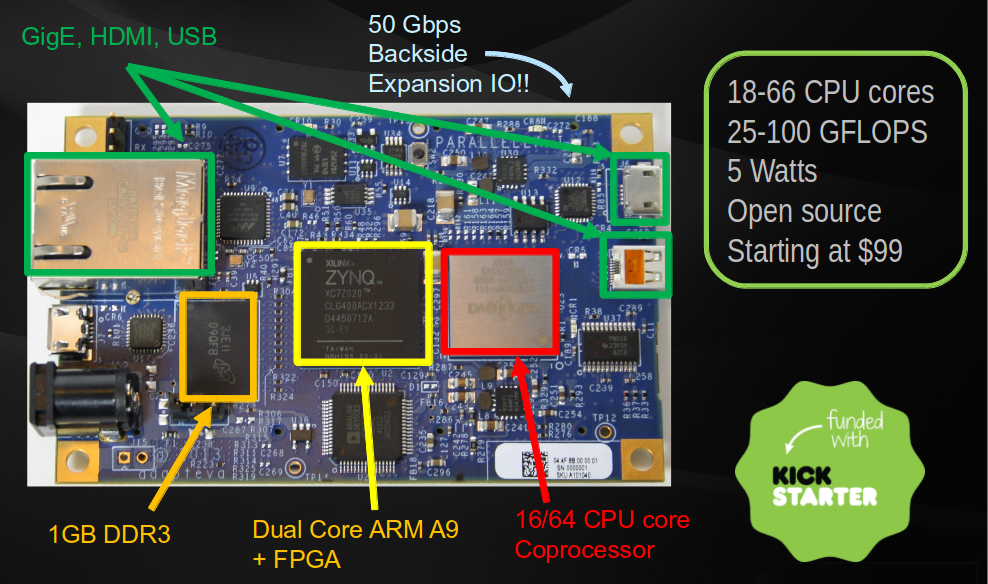
Debugging for Massive Parallelism
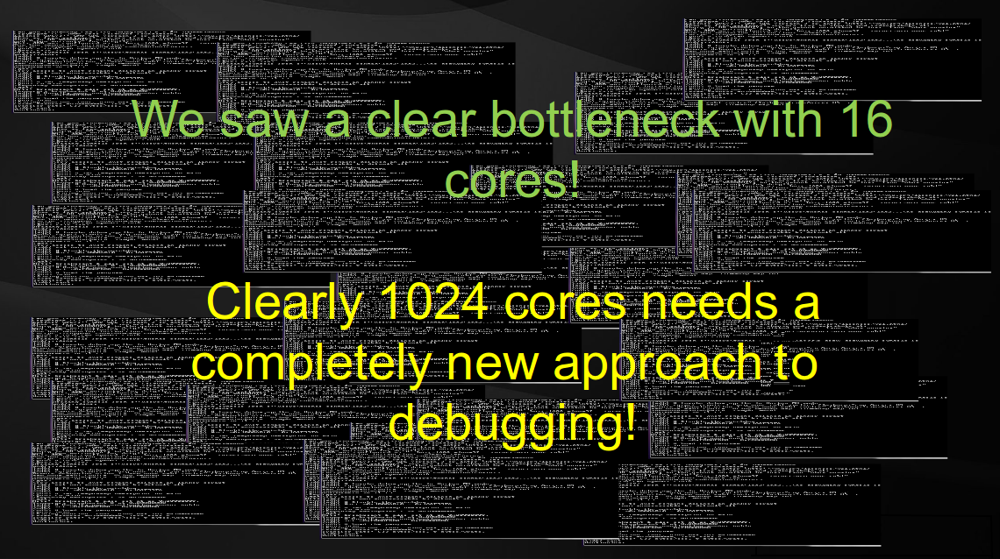
Ericsson (CDT) and Adapteva (Parallella) collaboration
- Goals:
- Open-source multicore debug solution for Parallella
- Open example for multicore debug in CDT
- Easy access to multicore debugging for all
- Collaboration and exposure to improve multicore debug
Previous Debug Solution for Epiphany
- Single-core traditional hardware debug using GDB
- Load program on a core and debug it
- No global perspective
- Needs one session per core to deal with entire system
- Does not scale past 16 cores, and even then
Implemented Enhancements
- Single session to debug the entire Epiphany
- Connecting to an already running system
- A debug thread is a single core
- A debug process is a group of cores running the same binary
- Traditional debugging for each core
- Epiphany Multicore Visualizer
- Support for Non-stop mode
Debugging the main chip
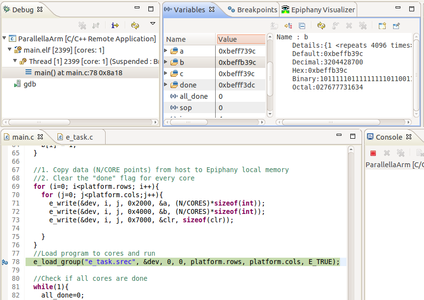
- Remote Debug of ARM chip (Ubuntu) with GDB/gdbserver
- Traditional debug operations for ARM program
Multicore Debugging the Epiphany
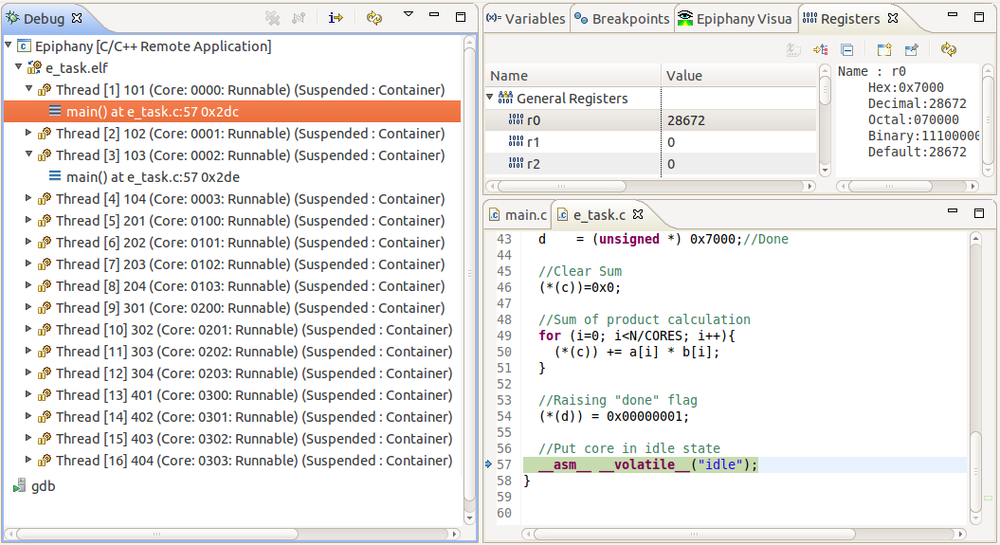
- Remote Multicore Debug of Epiphany with e-GDB/e-server
- Traditional debug operations for all Epiphany cores
Multicore Debugging Parallella
- Debug using both sessions
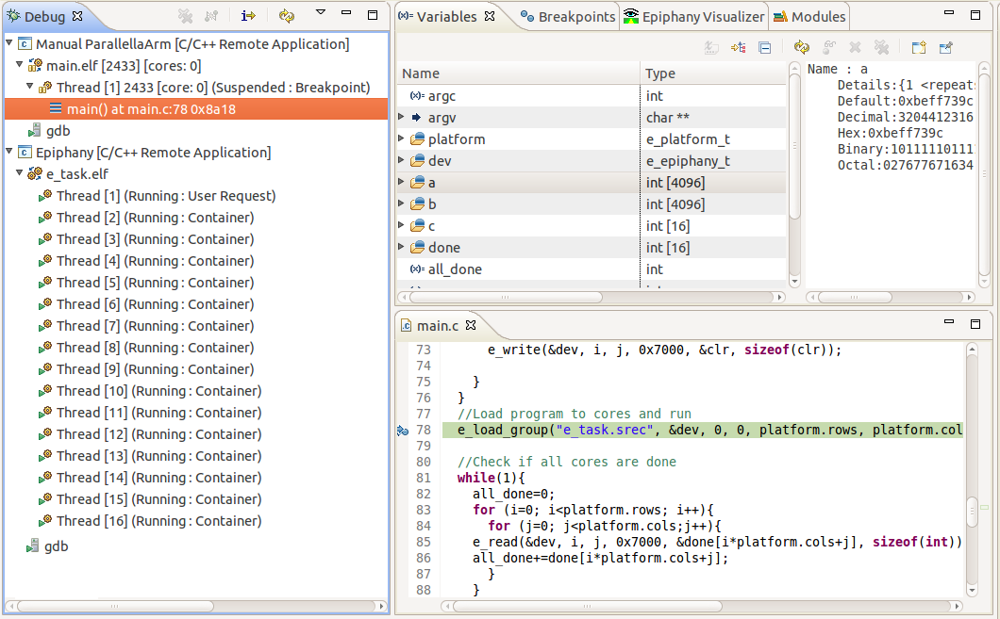
Scaling issues
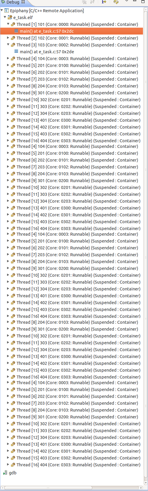
- Debug view with 64 cores
- Unmanageable!
- Need Visualization
Generic Multicore Visualizer
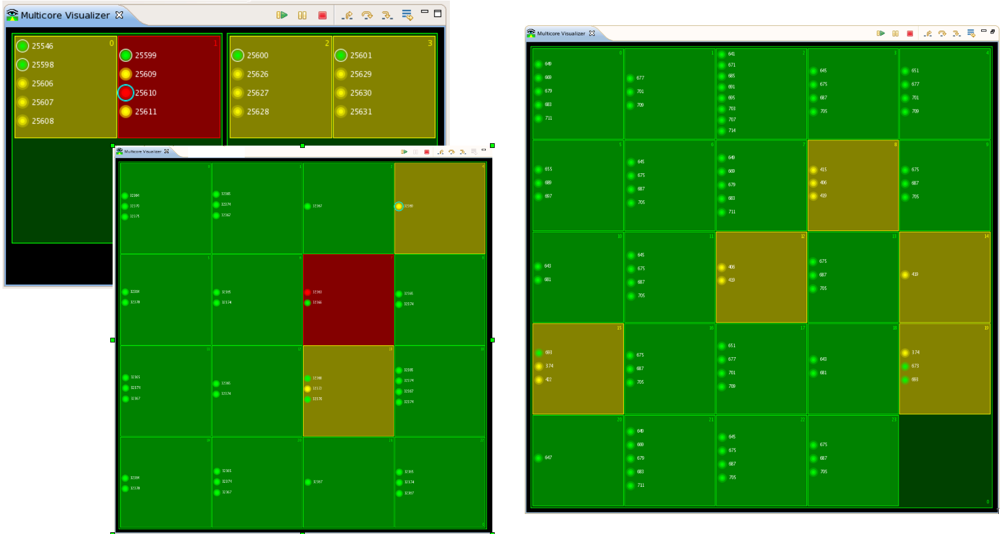
- Monitor entire system at a glance
- Control program execution from Visualizer
- Synchronized with Debug view
Epiphany Multicore Visualizer
- Hardware layout
- Cores and network
- Process distribution
- Load of cores
- Load of network
Epiphany Multicore Visualizer Layout
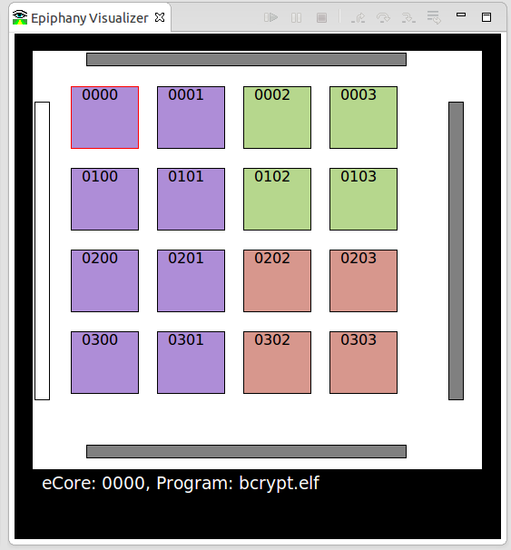
- Actual hardware layout
- Core IDs
- Color shows binary loaded
- Selection of cores
- Status bar info
Program Distribution and Load
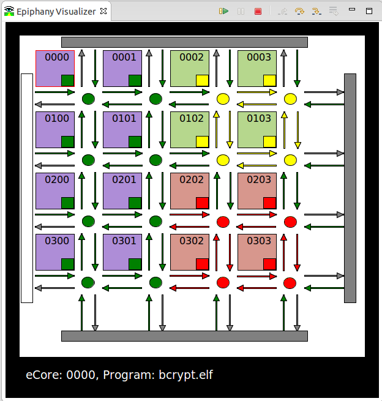
- Layout with network
- Load per core
- Load per network link
Status reporting
- Running state per core in Visualizer
Grouping
- GDB IT sets support
- Run Control operations on group
- Breakpoints limited to group
User-selectable cores to debug

- Attach to a group/process to debug it
- Debug view only shows attached groups
- Attaching directly from Visualizer
Debugging thousands of cores
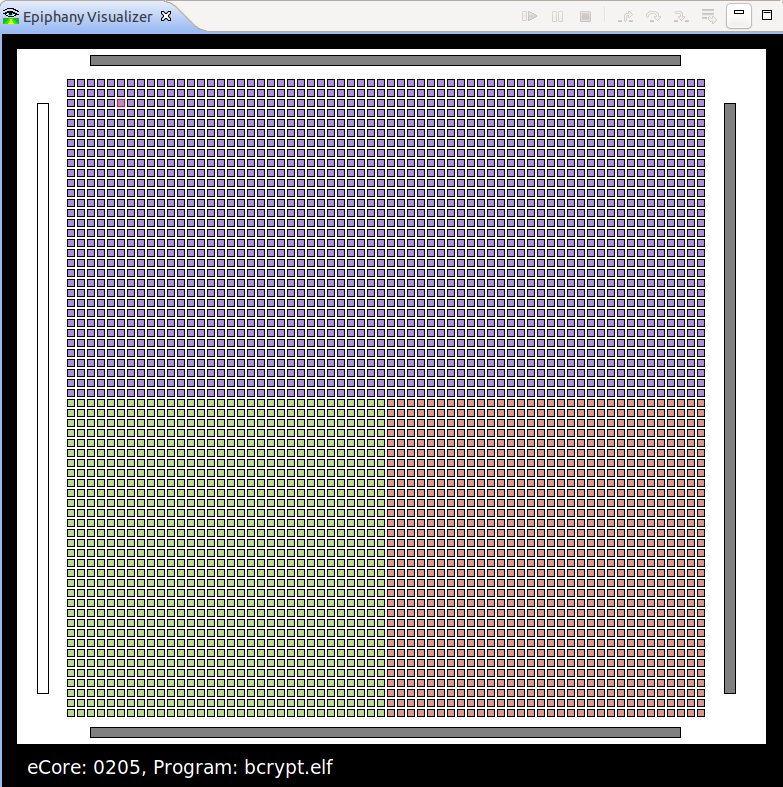
Debugging thousands of cores
Possible solutions
- Zooming
- Use of scrollbars or mouse drag
- Use of colors to pin-point an issue
- Automatic issue detection
- More study needed, more collaboration
Visualizer Zooming
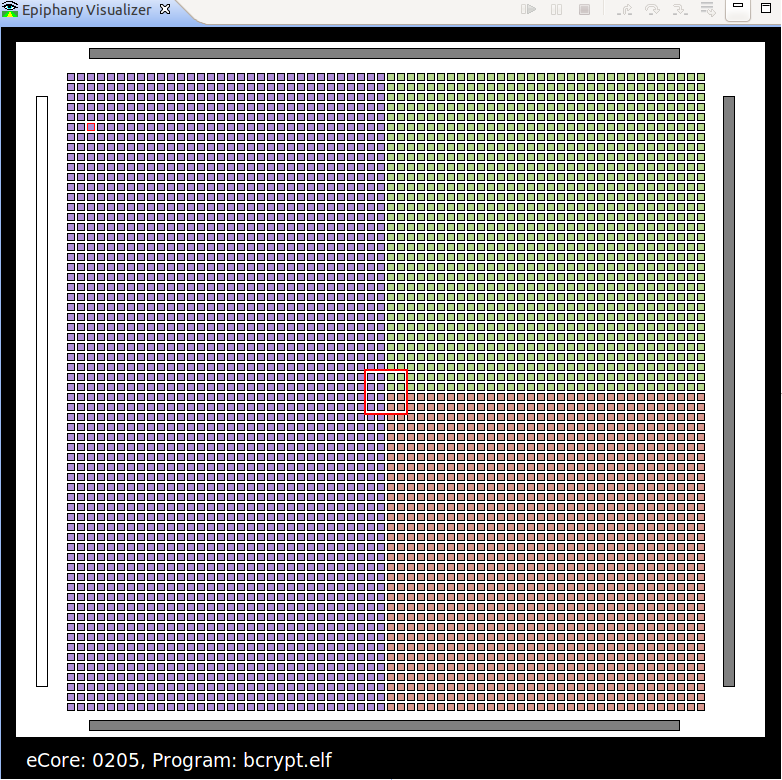
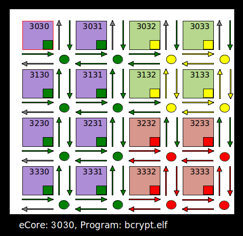
- Zoom directly
- Pin & Clone
- Multiple Visualizer views
- One high-level view
- One or more zoomed views
Visualizer Pin & Clone
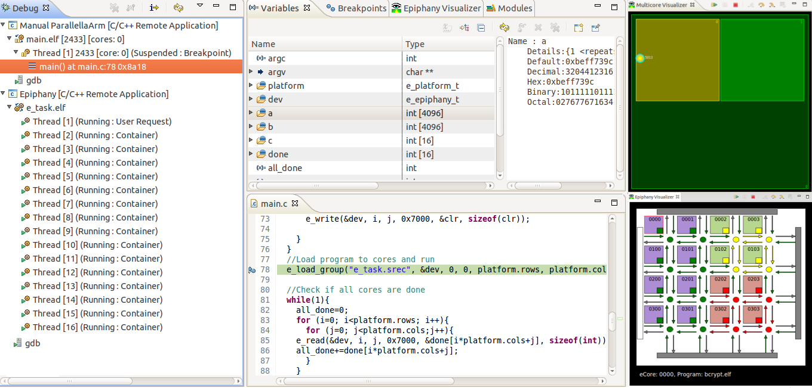
- The entire Parallella: ARM and Epiphany chips
Debugging with CDT - a use case Demo
Standalone CDT Debugger
> cdtdebug.sh -e <binary> [arg1 ... argn]

Standalone CDT Debugger
- Uses an existing installation
- Installs a launch script in your home for convenience
- Launches with a subset of the plugins (custom config.ini)
- Several ways of launching:
- Run executable: -e
- Attach: -a
- Postmortem (Coredump): -c
Standalone CDT Debugger
Potential use cases
- Quick launching from the command-line
- Integrate with other shell scripts
- Integrate with crash handlers?
- Let's see if that's possible!